Section 1
I. Définitions — commencements du jeu — trictrac toujours ouvert
1.1 Définitions
1. Définition du trictrac.
Le trictrac se joue avec deux dés et trente dames, sur un tablier composé de deux parties, divisées chacune par six petites flèches d'ivoire de chaque côté, qui sont alternativement de deux couleurs différentes, et sur lesquelles on place les dames conformément aux règles du jeu.
2. Origine du mot trictrac.
Beaucoup de personnes pensent que le trictrac tire son nom du bruit que font les dés, les dames et les cornets ; d'autres disent que ce nom vient de deux mots grecs qui signifient trois fois difficile.
3. Nombre des joueurs.
On ne peut jouer au trictrac que deux personnes à la fois.
4. Désignation des joueurs.
J'adresserai toujours la parole à un même joueur, que j'appellerai vous; l'autre joueur sera désigné parle mot Vadversaire. Tout ce que je vous dirai s'appliquera également à l'adversaire, sans qu'il soit nécessaire de le dire : car les droits et les devoirs sont égaux pour les deux joueurs. Si cet adversaire n'existe pas, vous le supposerez, et vous jouerez pour lui, c'est-à-dire que vous jetterez les dez, placerez les dames, et ferez généralement tout ce que cet adversaire aurait à faire. Vous en prendrez ensuite un véritable, auquel vous montrerez le peu que vous saurez. Je supposerai que l'adversaire est devant le haut du trictrac.
5. Objets nécessaires.
Il faut une boîte ou une table, qu'on appelle aussi trictrac; deux cornets, trente dames (quinze d'une couleur et quinze d'une autre), trois jetons, deux fichets, un pavillon, deux flambeaux ou une lampe.
6. Trictrac en botte ou à charnières.

Etant ouvert (fig. 1), le trictrac est Composé de quatre fortes bandes, deux grandes, AB, DC, et deux petites, AD, BC, assemblées entre elles, formant un carré long ou rectangle; le fond est formé de planches minces. Les grandes bandes sont coupées par le milieu E, F; ces deux milieux sont réunis par une double bande qui partage le trictrac en deux parties égales, réunies par deux charnières. Cette bande de séparation est double, afin que rien ne puisse tomber quand le trictrac est fermé et contient les objets nécessaires pour jouer.
7. Tablier.
C'est le fond du trictrac, la partie creuse, celle où sont les flèches. On lui donne ce nom parce qu'il renferme tout ce qu'il faut pour jouer. Il est divisé en quatre parties, qu'on appelle tables : aeih, ghlk, klcm, hifd.
8. Trictrac en table.
Voici en quoi il diffère de l'autre : il est fixé à une table, ses grandes bandes ne sont pas divisées, il n'a pas de charnières pour le fermer, il faut le couvrir avec une tablette.
9. Bandes.
Les quatre bandes qui entourent le tablier servent à arrêter les dés que l'on y jette et les dames que l'on y arrange. Elles sont percées de trous.
10. Flèches.
Marques longues, terminées en pointe, et tracées au fond du trictrac. Il y en a vingt-quatre, alternativement blanches et vertes ou noires, en sorte que les blanches d'un joueur sont vis-à-vis les vertes de l'autre.
11. Trous.
Sur les deux grandes bandes il y a vingt-quatre trous vis-à-vis les vingt-quatre flèches ; sur les bandes latérales il y en a trois.
12. Dames.
Morceaux d'ivoire ou de bois, plats et arrondis. Il y a quinze dames blanches pour un joueur, quinze vertes ou noires pour l'autre. Leur grandeur en diamètre doit être telle que six remplissent la largeur du demi-tablier, à peu près cinq centimètres et demi.
13. Talon.
Première flèche, sur laquelle les joueurs rangent leurs dames en trois piles, vous à votre gauche, l'adversaire à sa droite. Ces flèches sont de couleur différente, comme on l'a vu au n°10.
14. Cornet.
Petit vase de cuir dans lequel on remue les deux dés avant de les jeter. Chaque joueur en a un.
15. Dés.
Petit morceau d'ivoire, de figure cubique ou à six faces égales, dont chacune est marquée d'un nombre différent de points, depuis un jusqu'à six. La somme des points de deux facea opposées est sept. Il en faut deux.
16. Nombres des dés.
Des six nombres que peut présenter chaque dé, on ne s'occupe que de celui de la face de dessus. Toujours on se contente de dire les nombres, le nombre.
17. Coup simple. Doublet.
Chaque nombre d'un dé pouvant se combiner avec les six nombres de l'autre dé, il y a bien plus de coups à nombres inégaux qu'à nombres égaux : c'est pour cela que les premiers sont appelés coups simples, et les autres doublets. Les premiers s'énoncent en nominant d'abord le plus grand nombre : on dit six-cinq, quatre-deux, trois et as. L'as est le seul nombre devant lequel on prononce la conjonction et.
Les doublets ont des noms particuliers: deux as, deux deux, deux trois, deux quatre, deux cinq, deux six, s'appellent beset, double-deux, terne, carme, quine, sonnez.
18. Jeton.
Pièce ronde et plate, en ivoire ; il en faut trois. Ceux qui ont plus d'épaisseur, presqu'un demi-centimètre, et qui ont moins de diamètre en dessus et en dessous qu'au milieu de leur épaisseur, sont plus faciles à pousser et à prendre.
19. Fichet.
Petite cheville en ivoire, ou petit plumet de soie à deux panaches. Chaque joueur en a un, qu'il place dans le trou de la bande latérale, près de son talon.
20. Pavillon.
Marque façonnée en étendard, qui se place dans le trou du milieu de la bande latérale qui est du côté des deux talons.
21. Eclairage.
Si l'on n'a pas de lampes, on emploie deux petits flambeaux dont la tige entre dans le trou du milieu de chaque bande latérale.
1.2 Commencements — Placement — Primauté - Jouer ses dames - Trictrac toujours ouvert
22. Nombre possible de joueurs.
Une personne peut étudier le jeu seule, mais pour le jouer il faut être au moins - deux. On verra plus tard comment on joue quand on est trois, quatre, et même cinq.
23. Place du trictrac.
Si l'on est près d'une fenêtre, on tourne du côté opposé la bande près de laquelle sont les deux talons, pour éviter l'ombre.
24. Place des joueurs.
Si vous voulez honorer la personne avec laquelle vous jouez, vous devez faire en sortè qu'elle ait ses dames à sa droite, à moins qu'elle ne préfère les avoir à sa gauche. On doit s'accoutumer à jouer d'un côté quelconque.
25. Choix des dames. Places des objets.
Vous laissez à l'autre joueur le choix des dames. Hâtez-vous de mettre vos dames en trois piles sur votre talon, la première touchant la grande bande. Les jetons se mettent près de la petite bande, entre les deux talons ; c'est leur talon, leur point de départ. Les fichets se placent dans les trous de la petite bande, près des talons. Le pavillon se met dans le trou milieu de la petite bande, du côté des talons.
26. Places des joueurs. Numéro des flèches. Nombre des dames.
Je supposerai toujours que vous êtes devant le milieu de la grande bande AB, qui est en bas. L'adversaire est vis-à-vis vous. La moitié inférieure du tablier sera votre jeu, l'autre moitié sera l_e jeu de l'adversaire_. Votre talon sera à gauche, l'adversaire aura le sien à sa droite. Vos onze autres flèches seront numérotées 1, 2, 3,..., 10, 11. Les onze flèches de l'adversaire le seront de même. Vous aurez toujours les dames blanches.
27. Dessin des figures.
Pour plus de clarté, j'ai multiplié les figures. Le dessin ne pouvant indiquer que trois dames par flèche, leur nombre réel est marqué par un chiffre placé en dessus.
28. Primauté.
Les dames étant sur les deux talons, vous vous hâtez de mettre les dés dans votre cornet, vous les agitez un peu, et les lancez de manière qu'ils touchent la bande opposée ou les dames de l'adversaire ; vous dites en même temps : Je vous présente les dés, ou Coup et dés. Vous examinez tous les deux les deux nombres amenés : si le nombre le plus grand est plus près de votre bande que n'est le plus petit, le coup est pour vous, et vous le jouez comme je dirai au numéro suivant.
L'adversaire prend ensuite les dés et les jette en frappant votre bande ou vos dames; il joue son coup avec ses dames. Vous jetez les dés à votre tour, et chacun des deux joueurs joue ainsi alternativement jusqu'à la fin. Vous ne devez lever les dés que quand radversaire a nommé et joué ses nombres.
Lorsque vous jetez les dés la première fois, s'il arrive que le nombre le plus faible soit le plus près de votre bande, ce coup est pour l'adversaire, et il le joue. Vous reprenez les dés et les jetez; ce coup est pour vous.
Si les deux dés ont des nombres égaux, ou s'ils sont à la même distance d'une bande, le coup est nul ; l'autre joueur jette les dés.
La primauté, ou le droit de jouer le premier coup avec ses dames, appartient à celui des deux joueurs qui a le plus grand nombre plus près de lui que le plus petit.
29. Jouer ses dames. Noms des flèches.
Pour jouer un coup avec ses dames, il faut avancer deux dames chacune d'autant de flèches qu'il y a d'unités dans le nombre correspondant. Par exemple, pour beset, qu'on peut écrire 1-1, on prend au talon deux dames, que l'on met sur la première flèche, la plus voisine, marquée 1 (fig. 1), et qui est la flèche de l'as. Si vous avez ensuite trois et as, que l'on écrit 3-1, vous mettez une dame sur la flèche première et une sur la troisième flèche. Vous avez alors onze dames au talon, trois à la première flèche, une à la troisième. Pour 6-4, que l'on doit énoncer six-quatre, on compte quatre flèches à partir du talon, puis six flèches, et vous arrivez à la première flèche de la deuxième table. Il y a ainsi neuf dames au talon, trois à la première flèche, une à la troisième, une à la quatrième, une à la sixième (fig. 2).
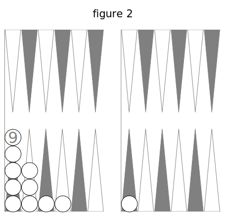
30. Tout a bas. Tout d'une. Repos.
Au lieu de jouer un coup avec deux dames, ce qu'on appelle mettre tout à bas, on peut le jouer avec une seule dame, que l'on avance d'autant de flèches qu'il y a d'unités dans la somme des nombres des deux dés : c'est ce qu'on appelle jouer tout d'une. Ainsi on peut jouer 1-1 en mettant une dame sur la deuxième flèche ; pour 3-1 on place une dame sur la quatrième flèche ; pour 6-4, dont la somme est dix, vous placez une dame sur la dixième flèche, qui est l'avant-dernière de votre jeu. Lorsque vous jouez tout d'une, vous êtes censé vous reposer sur la flèche qui répond à l'un des deux nombres: ainsi, pour 6-4, vous faites semblant de poser une dame sur la quatrième flèche, en disant 4, 6, ou sur la sixième, en disant 6, 4, et dans ces deux cas vous arrivez à la dixième flèche. Les flèches quatrième et sixième sont appelées les deux repos. Si le coup à jouer est un doublet, il n'y a qu'un repos; pour 4-4, fe repos est à la quatrième flèche, et la dame va du talon à la huitième flèche.
31. Dames abattues.
Aux coups suivants, vous pouvez jouer tout à bas, ou tout d'une, de votre talon ou des dames déjà jouées, des dames abattues; vous pouvez jouer aussi une dame du talon et une abattue, pourvu que deux dames avancent chacune d'autant de flèches qu'il y a d'unités dans chacun des deux nombres, ou qu'une dame avance d'autant de flèches qu'il y a d'unités dans la somme des deux nombres. On voit que l'on ne compte point la flèche de départ, et que la dernière a le n° 11, quoique chaque joueur ait douze flèches. Les coups 6-3, 5-4, joués tout d'une, donnent également une dame à la neuvième flèche; mais, joués tout à bas, ils donnent quatre dames, placées sur quatre flèches différentes.
32. Le petit nombre d'abord.
Lorsqu'on joue tout à bas, on prend deux dames du talon; on en laisse une sur la flèche qui répond au plus petit nombre, et l'on porte l'autre où elle doit être. Si l'on a 6-2, on laisse une dame à la deuxième flèche, et l'on porte l'autre à la sixième.
33. Marche du trictrac. Jeu ordinaire. Passer au retour.
Chaque joueur a le droit de faire, en jouant, tout le tour du tablier, en comnlençant à son talon et finissant à celui de l'adversaire ; il suit ses flèches 1, 2, 3, ... 10, 11 ; puis celles de l'adversaire 11, 10,9, ... 2, 1, et le talon; ensuite il sort ses dames hors des flèches : au trictrac les dames ne reculent jamais. On comprend facilement que les dames des deux joueurs se rencontreront bientôt et bien souvent ; cela donnera lieu à des coups que j'expliquerai. Tant qu'un joueur laisse ses quinze dames dans sa moitié du tablier, on dit que c'est le jeu ordinaire. On dit qu'un joueur passe au retour lorsqu'il est amené à placer une ou plusieurs dames sur une ou plusieurs flèches de l'adversaire; ces dames sont des dames passées au retour. Les joueurs ne peuvent cependant passer au retour qu'en se conformant à certaines règles que je dirai. D'après ce qui vient d'être dit, on voit que chaque joueur a sa première et sa deuxième table.
34. Nécessité de tout jouer.
A chaque fois que vous jetez les dés vous êtes forcé de tout jouer, c'est-à-dire d'avancer deux dames d'autant de fléches qu'il y a d'unités dans chaque nombre, ou une dame d'autant de flèches qu'il y a d unités dans la somme des deux nombres. C est la première règle du jeu, la plus importante, celle qui remporte sur presque toutes les autres.
35. Se souvenir des numéros des flèches.
Il est facile de vous mettre dans l'esprit le numéro de chaque flèche ; c'est important, il faut vous en occuper. Cela vous fera connaître tout de suite l'endroit où doit être placée une dame jouée du talon. Dans la première table, la dernière flèche est la cinquième, la précédente la quatrième, puis la troisième. Dans la deuxième table, la première est la sixième ; la suivante est la septième; la dernière est la onzième, celle d'avant est la dixième; pour les deux autres, je dis la première ou la deuxième du milieu. Il est aussi très important de bien connaître le numéro des flèches de l'adversaire, pour voir s'il place bien ses dames.
36. Flèches de même couleur.
Remarquez que, lorsqu'on joue un nombre pair, deux, quatre, six, huit, dix, douze, la dame est portée sur une flèche de même couleur que celle d'où elle est partie; si le nombre joué est impair, un, trois, cinq, sept, neuf, onze, la dame va sur une flèche de couleur différente. Cela vient de ce que les flèches sont de même couleur de deux en deux. Cette remarque vous servira à chaque coup de vous ou de l'adversaire, surtout quand on joue un grand coup, ou d'une table dans l'autre.
Il est d'autres règles, d'autres remarques, que vous pouvez faire: par exemple, d'un coin noir à un coin noir, il y a 6, 12, 18 ; d'un coin noir à un blanc, il y a 5, 11, 17.
37. Voir promptement ou va une dame.
On peut se faire des règles faciles à appliquer pour voir promptement où vont les dames que l'on joue. Il y a trois cas.
Premier cas. — Votre daine ne sort pas de votre jeu ; il faut au numéro de la flèche de départ ajouter le nombre à jouer; la somme est le numéro de la flèche où la dame s'arrête. En effet, jouer une dame, c'est l'avancer d'autant de flèches qu'il y a d'unités dans le nombre que l'on joue. Le nombre sept porte une dame de votre troisième flèche à la dixième.
Deuxième cas. — Votre dame ne sort pas du jeu de l'adversaire; il faut du numéro de la flèche de départ retrancher le nombre à jouer; le reste est le numéro de la flèche où rotre dame 9 'arrête: car, dans le jeu de l'adversaire, vos dames vont du côté de son talon, et alors les numéros des flèches vont en diminuant. Le nombre sept porte une de vos dames de sa dixième flèche à sa troisième.
Troisième cas, le plus difficile. — Une de vos dames va de votre jeu dans celui de l'adversaire; il faut ajouter le numéro de la flèche de départ au nombre à jouer, et de vingt-trois retrancher cette somme ; le reste est le numéro de la flèche où la dame s'arrête. En effet, à cause du talon il ne faut compter que vingt-trois flèches; vingt-trois égale les trois nombres suivants : le numéro de la flèche de départ, le nombre à jouer et le le numéro de la flèche où la dame s'arrête. Donc si l'on en connaît deux, il est facile d'avoir le troisième.
En étudiant ce livre, ou en jouant, on pourra faire usage des trois règles; la troisième est très utile. Si votre dame est à votre huitième flèche, si vous avez à jouer 9, vous retranchez 8 plus 9 ou 17 de 23; il vous reste 6 : donc votre dame va à la sixième flèche de l'adversaire.
38. Conseils pour les commençants.
J'engage à étudier avec soin les numéros précédents, depuis le numéro 29, car on en a besoin à tous les coups, et on verra plus loin combien il est important de ne pas se tromper sur la place de chaque dame. Il faut aussi voir si l'adversaire place bien ses dames où elles doivent aller.
39. Trictrac toujours ouvert.
Jusqu'à ce que l'on ait un trictrac gravé dans sa tête, il faut tenir le sien toujours ouvert. On doit y placer les dames comme il sera dit dans le livre, et suivre ainsi les explications. Il faudra, quand on sera assez avancé, faire de même, pour mieux comprendre. Avant d'aller plus loin, exercez-vous à jouer beaucoup de coups pour vous et pour l'adversaire opposé. Sans trop de précipitation, accoutumez-vous à être prompt. Jouez un peu vite, sauf à vérifier si c'est exacl. Arrivez à voir tout de suite où va chaque dame à jouer, où iraient les autres dames si on les jouait, parce qu'il y a toujours à choisir, ainsi que vous le verrez. J'insiste sur tous ces points, car ils sont importants.
1.3 Case - Lois pour jouer un coup - Coin
40. Case.
On appelle case toute flèche sur laquelle il y a au moins deux dames; demi-case, toute flèche sur laquelle il y a une seule dame. Caser, c'est faire une ou plusieurs cases ; faire une case, c'est réunir deux dames sur une flèche qui n'en a point ou n'en a qu'une ; faire une demi-case, c'est mettre une dame sur une flèche qui était vide. Couvrir, couvrir une dame, c'est mettre une deuxième dame sur une flèche; cela fait une case; c'était auparavant une demi-case, une dame découverte. Une surcase est une troisième dame qui est devant la case ; une double surcase, c'est quatre dames sur une flèche. Si l'on a trois dames sur une flèche, on les met séparément et se touchant; s'il en vient d'autres, on les place sur les premières.
41. Ordre des cases.
Chaque joueur peut faire sept cases et demie avec ses quinze dames. Vous casez d'abord dans votre première table, puis dans la deuxième, ensuite dans la deuxième et la première de l'adversaire, et enfin vous sortez vos dames des flèches.
42. Lois pour jouer.
La nécessité de jouer ses dames à des flèches quelconques est restreinte par plusieurs lois que je ferai connaître. La première est celle-ci : Vous ne pouvez placer ni une dame, ni deux, sur une flèche ou l'adversaire a une ou plusieurs dames, même si cette flèche est dans votre jeu; vous ne pouvez non plus. vous y reposer. Il en est de même pour l'adversaire. (cf. n° 4.) Deuxième loi : À la onzième flèche de L'adversaire vous ne pouvez placer ni une dame, ni deux ; vous pouvez vous y reposer. Troisième loi : À votre onzième fléche vous ne pouvez avoir une dame seule.
43. Coin. Prendre son coin. Avoir son coin.
La case de la onzième flèche est plus difficile à faire que les autres, puisqu'elle ne peut se faire en deux coups, comme les autres, et qu'il faut qu'un coup y porte deux dames. C'est la plus importante; elle procure de grands avantages quand on l'a, et cela fait beaucoup de tort de ne pas l'avoir. Prendre son coin, c'est y mettre deux dames. Avoir son coin, c'est y avoir deux dames ou plus. Quitter son coin, c'est jouer dans le jeu de l'adversaire les deux dernières dames du coin. Ayant deux dames au coin, on peut y en ajouter une, deux, trois... ; de même, on peut passer au retour une ou plusieurs dames, pourvu que les deux dernières sortent du même coup.
44. Prendre son coin par puissance.
On vient de voir qu'on le prend lorsqu'un coup y porte deux dames. On a fait cette convention: Si l'adversaire n'a pas son coin, et si votre coup y porte deux dames, vous prenez le vôtre par puissance, par la puissance de diminuer chaque nombre d'une unité. Deux dames aux flèches sixième et septième, avec 6-5, prennent le coin. L'autre manière s'appelle prendre son coin directement. Il y a une règle : Lorsqu'on peut prendre son coin directement, il n'est pas permis de le prendre par puissance. Cette règle est sans exception.
45. Battre le coin.
Si vous avez votre coin, si l'adversaire n'a pas le sien, et si votre coup porte deux dames dans le coin de l'adversaire, on dit que vous battez le coin. Par exemple, si vous avez le coin et des dames aux flèches sixième et huitième, et si vous amenez 6-4, vous battez le coin ; deux dames à votre huitième et 4-4 battent le coin par doublet; si le coup a un as, on ne bat que si l'on a trois dames à son coin; 1-1 ne bat que s'il y a quatre dames. On peut battre plusieurs fois, et chaque fois procure un avantage, un gain. On voit déjà qu'il est bon de prendre son coin le premier, puisqu'on peut battre l'autre, et on empêche l'adversaire de prendre son coin par puissance.
46. Dame touchée, dame jouée.
Vous connaissez déjà cinq règles (cf. numéros 34, 42, 44, dernières lignes); vous ne faites que commencer, et cependant il y a une autre règle à laquelle vous devez vous conformer à chaque coup que vous jouez. 11 faut prendre dès à présent l'habitude de la suivre toujours, car vous verrez corn-bien on a regret de l'avoir négligée ou oubliée.
Dame touchée, dame jouée ; cela veut dire : Toute dame touchée doit être jouée, si c'est possible, à moins qu'avant de la toucher on ait dit: J'adoube. Avant de toucher aucune dame pour jouer votre coup, il faut être bien sur de la place que vous lui destinez, car à ce jeu on est obligé de suivre exactement les règles. Dès que vous avez touché une de vos dames, vous êtes forcé de la jouer, et il arrive souvent qu'elle va à une place qui vous est désavantageuse.
Exceptions. Celui qui n'a pas jeté les dés peut toucher ses dames. Il y a exception, quand les dames touchées ne peuvent être jouées, et quand elles ne trouvent de place dans aucun jeu ; par exemple, si l'on touche les dames de son coin.
II. Pleins — Jans — Petit jan
47. Pleins. Jans.
Lorsque l'on fait cinq cases à la suite de 1 son talon, et qu'il reste au moins deux dames sur la flèche du talon, on dit que l'on fait un plein, ou que l'on remplit (fig. 3).
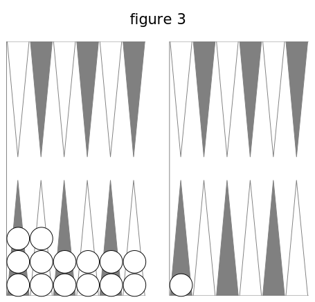
On remplit également lorsqu'on fait les six cases suivantes, les cases des flèches 6e, 7e 8e, 9e, 10e 11e (fig. 4)
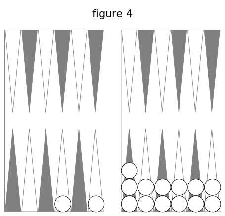
ou lorsqu'en passant au retour (cf. nos 33, 41), on y fait ses six dernières cases, c'est-à-dire celles du talon et des cinq premières flèches (fig. 5).
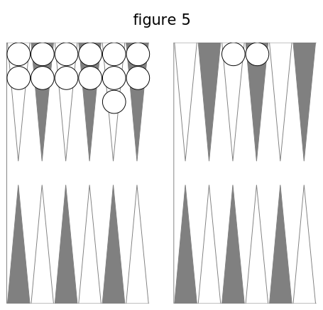
On voit ainsi que remplir ou faire un plein, c'est parvenir à avoir au moins deux dames sur chacune des six flèches d'une de vos deux tables ou de la première de l'adversaire. On ne peut faire de plein dans la deuxième table de l'adversaire, parce que l'on ne peut placer ni une dame ni deux à sa onzième flèche.
Chacun de ces trois pleins donne un même bénéfice à celui qui le fait. Au jeu de trictrac, on est convenu d'appeler jan tout coup qui apporte un gain ; quelques personnes disent que ce mot vient de Janus, qui avait deux faces, comme les coups du trictrac.
48. Petit jan. Grand jan. Jan de retour.
Ces trois pleins ont plusieurs choses semblables; mais ils différent en bien des points, et on leur a donné des noms différents. Le premier est le petit jan, parce qu'il est peu important, ne se fait pas toujours, et rapporte peu. Le deuxième est le grand jan, ainsi nommé à cause de sa grande importance, car c'est de lui, presque toujours, que dépend le gain ou la perte. Le troisième est le jan de retour : il tire son nom de l'endroit où on le fait. J'expliquerai les trois pleins séparément et dans l'ordre où ils se présentent.
49. Petit jan.
Le joueur qui peut parvenir à former les six cases dans la partie du tablier où est le talon, fait un petit jan.
50. Dames surnuméraires.
Chaque joueur a quinze dames; il n'en faut que douze pour les cases d'un plein : donc il y en a trois autres, qu'on appelle dames surnuméraires. On donne le même nom aux quatre ou cinq dames qui ne sont pas employées quand il reste à faire une demi-case, ou deux demi-cases, ou une case. On va même jusqu'à appeler dame surnuméraire celle qui est au-delà de la flèche ou des flèches à couvrir.
51. Pouvoir remplir.
A chaque coup que vous jouez, vous n'avancez que deux dames ou une. Ainsi pour remplir au coup suivant, il faut qu'il ne manque plus au plein que deux dames ou une, c'est-à-dire qu'il n'y ait plus à faire qu'une case, ou deux demi-cases, ou une demi-case.
52. Conditions pour remplir.
Il y en a trois, il faut 1° qu'il ne manque au plein que deux dames ou une ; 2° que vous ayez au moins deux dames surnuméraires qui ne soient point passées au-delà de la flèche ou des deux flèches à couvrir; 3° que votre coup porte deux de vos cinq dames surnuméraires, ou une de vos quatre, sur les flèches ou la flèche à couvrir, selon qu'il reste à faire une case, deux demi-cases, ou une demi-case. Il est possible qu'un plus grand nombre de conditions soient nécessaires pour les deux autres pleins.
53. Une case a faire.
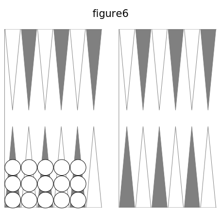
Avec la fig. 6, cherchez les coups qui peuvent remplir. Pour n'en oublier aucun, combinez la première dame surnuméraire, celle qui est à gauche, avec les quatre autres, vous aurez 5-4, 5-3, 5-2, 5 1 ; ensuite la deuxième avec les trois autres, cela donne 4-3, 4-2, 4-1 ; la troisième avec les deux autres donne 3 2, 3-1, et enfin 2-1 : ainsi dix coups remplissent. Pour voir si un coup amené remplit, il faut voir si chaque nombre porte une dame sur la flèche vide. Avec cette figure, aucun doublet ne remplit. Si les cinq dames surnuméraires sont, deux à la première flèche, deux à la troisième, une à la quatrième, les coups qui remplissent sont 4-2, 4-1, 2-1, 4-4, 2-2 : cinq coups.
54. Deux demi-cases à faire. Voir si un coup remplit.
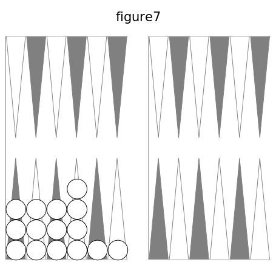
Ceci est nouveau et demande plus d'attention, plus de travail. Ici les dames surnuméraires sont des surcases. Couvrez la première demi case avec la première surcase, et la deuxième demi-case avec la deuxième surcase, cela donne 4-4; on peut aussi couvrir la deuxième demi-case avec la troisième surcase, avec la quatrième, et on a 4-3, 4-2. Couvrez la première demi-case avec la deuxième surcase, et la dellxième demi-case avec la troisième surcase, puis avec la quatrième, vous avez 3-3, 3-2 ; la troisième surcase sur la première demi-case et la quatrième surcase sur la deuxième demi-case ajoutent 2-2. On a donc 4-4, 4-3, 4-2, 3-3, 3-2, 2-2.
Mais on peut aussi couvrir la deuxième demi-case avec la première surcase, et la première demi-case avec la deuxième surcase, cela donne 5-3; la première demi-case peut être couverte par la troisième surcase, par la quatrième, et on a 5-2,,5-1. Couvrez la deuxième demi-case avec la deuxième surcase, et la première demi-case avec la troisième surcase, avec la quatrième, cela donne 4-2, 4-1 ; la troisième surcase sur la deuxième demi-case, et la quatrième surcase sur la première demi-case, 3-1. On a ainsi la série 5-3, 5-2, 5-1, 4-2, 4-1, 3-1. Il y a aussi la double surcase, qui ajoute 2-1.
Ces deux séries s'obtiennent en combinant les demi-cases avec les surcases, mais dans un ordre différent: c'est d'abord première demi-case avec première surcase, et deuxième demi-case avec deuxième surcase; puis deuxième demi-case avec première surcase. et première demi-case avec deuxième surcase. Pour abréger, je dirai : première avec première, deuxième avec deuxième, puis deuxième avec première, première avec deuxième. Pour distinguer cela, je dirai l'ordre naturel, l'ordre inverse. On peut faire plusieurs remarques sur ces deux séries. Dans la première, trois doublets; point dans l'autre, où les nombres diffèrent au moins de deux. Les sommes correspondantes des nombres sont égales 8, 7, 6, 6, 5, 4. Le coup 4-2 est dans les deux séries.
Pour voir si un coup remplit, il faut voir si, avec les deux nombres, on a deux surcases qui peuvent couvrir les deux demi-cases, en les prenant dans l'ordre naturel, puis dans l'ordre inverse, et une double surcase.
55. Une demi-case a faire.
Pour remplir, il suffit qu'une surcase soit portée sur la demi-case, par le plus petit nombre, ou le plus grand, ou leur somme. 6-2 remplit du petit, 5-1 du grand, 3 1 de la somme 4. Il y a tant de coups qui remplissent, qu'on ne les dira pas; 6-6, 6-3, 6-1, 5-5, ne remplissent pas.
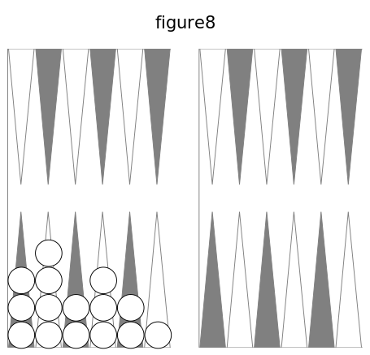
56. Remplir de deux façons, de trois façons.
Cela n'a lieu que lorsqu'il reste une dame à couvrir. Les coups 5-4, 4-1, remplissent de deux façons, du cinq et du quatre,
du quatre et du quatre et un, car ils portent l'une ou l'autre de deux des surcases sur la flèche à couvrir. Le 2-2 remplit de deux façons par doublet, du deux et du deux plus deux. Si une dame de la première flèche est portée à la quatrième, 4-1 remplit de trois façons, du petit nombre, du grand, de leur somme. Tout coup qui remplit apporte un gain, simple si c'est d'une façon, double si c'est de deux façons, triple de trois façons. Par doublet on ne peut remplir que d'une ou deux façons. Quand on a à choisir entre deux ou trois dames, on remplit de l'une, et on joue l'autre ou une des deux autres. On verra plus loin ce qui détermine dans ce choix.
57. Jouer d'abord la dame qui remplit.
Cela est très important; si l'on se trompe, si l'on joue le nombre qui ne remplit pas avec la dame qui aurait rempli ; on ne peut changer de place la dame jouée. (cf. n° 46.) Aux six règles ou lois que vous connaissez il faut ajouter celle-ci : Vous êtes obligé de remplir, si c'est possible.
58. Punition pour règle oubliée.
Vous venez de voir une nouvelle loi ; il s'en présentera beaucoup d'autres. Je dois vous prévenir qu'il faut vous habituer à suivre les lois avec exactitude, car vous verrez plus tard qu'il y a une punition, une peine, pour le joueur qui y manque. Il ne faut pas vous effrayer de cela : presque aucun joueur ne fait d'oubli de règle.
59. Mettre dedans.
Il est aisé de comprendre qu'avec une demi-case à faire il est plus facile de remplir que si l'on a une case à faire, puisque dans le premier cas on remplit du petit nombre, ou du grand, ou de leur somme, au lien que dans l'autre cas il faut avoir deux nombres qui portent directement deux surcases sur la flèche a couvrir. Avec la fig. 6 vous amenez 6-4; vous jouez le six du talon à la sixième flèche, puis le quatre de la première flèche à la cinquième, ce que l'on appelle mettre dedans. Vous pouvez alors remplir du trois, du deux, de l'as, c'est-à-dire avec tous les coups qui contiennent un de ces nombres.
60. Conserver.
Si vous avez un plein, chaque coup que vous pouvez jouer en laissant deux dames sur chacune des six flèches vous vaut un gain; on dit que vous conservez. Il faut donc conserver aussi long-temps qu'il est possible. Vous conserverez bien des fois avec la fig. 3, si les coups n'ont pas de grands nombres.
61. Passer au retour.
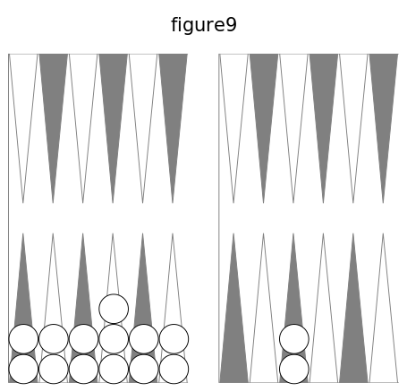
Avec la fig. 9 vous amenez 6-4 : comment le jouer? Peut-on conserver? Il faut jouer tout d'une de la neuvième flèche à la cinquième de l'adversaire, en vous reposant sur sa neuvième flèche ou sa onzième, en disant 6-4 ou 4-6. Si c'était 5-5, il n'y aurait qu'un passage ; si les passages étaient fermés, on jouerait de la première table ; si c'était 6-6, on prendrait son coin; si le coup était 3-3 ou 4-4, on conserverait en prenant son coin. Avec un nombre quelconque et 1 ou 2, avec une somme des nombres égale à 7, on conserverait.
Pour que vous puissiez passer au retour il y a trois conditions ; une flèche vide pour vous reposer dans la deuxième table de l'adversaire ; une flèche vide dans sa première pour vous y arrêter; vous ne pouvez placer aucune dame dans une table où l'adversaire peut faire un plein.
62. Rompre.
Rompre, c'est ne pas conserver, c'est être obligé de jouer une des douze dames qui font le plein. On rompt le petit jan si l'on a 6-3, 5-4, 5-3. Avec 6-3 on prend son coin.
Vous portez deux dames du talon de l'adversaire à sa troisième flèche, et vous amenez 6-6 ; vous ne pouvez passer au retour ; vous rompez en prenant votre coin. Les deux dames de votre huitième flèche sont portées à la sixième, et vous amenez 6-6 ; vous ne pouvez prendre votre coin par puissance, car la règle du numéro 44, dernières lignes, est sans exception ; vous rompez, en prenant votre coin.
63. Refaire son petit jan.
Ayant rompu par 6-3, on remplit de nouveau, si l'on a 1-1, 2-1, 2-2. Si vous portez les deux dames de la huitième flèche aux flèches cinquième et sixième, 6-6 fait rompre en prenant le coin, on a pour remplir les coups 1-1, 2-1, 2-2, 3-2, 4-2.
64. Remplir en passant.
Remplir en passant se dit quand vous n'avez plus à faire qu'une demi-case, si l'un des nombres fait remplir, et si l'autre fait rompre. Dans la fig. 9 on a rompu par 6-3 en prenant son coin ; on amène 6-2, on remplit par le 2 et l'on rompt par le 6.
III. Grand jan
65. Grand jan.
Lorsque vous ne pouvez faire le petit jan, ou que vous l'avez rompu, ou que vous ne voulez pas l'entreprendre, vous vous occupez de faire le grand jan, qui consiste à avoir au moins deux dames sur chacune des six flèches de votre deuxième table. Pour cela, vous vous empressez de faire, autant que possible, des cases dans votre deuxième table avec les dames jouées dans votre première.
66. Case du coin. Case du diable. Case de l'écolier.
Vous savez que la case du coin est la plus difficile et la plus importante; il faut donc vous occuper de la faire le plus tôt possible. L'expérience a appris que la case de la septième flèche est plus difficile à faire que les quatre autres, à cause de sa position par rapport au talon, ce qui ne permet pas d'y porter une dame directement, et ne laisse que rarement les six, les cinq et même les quatre pour la faire ; c'est cette difficulté qui l'a fait nommer case du diable ; on doit s'en occuper le plus tôt possible. On appelle case de l'écolier celle de la dixième flèche, à cause de l'empressement que des joueurs inexpérimentés montrent pour la faire, ce qui est quelquefois dangereux ; il est presque toujours avantageux de la faire la dernière.
67. Pouvoir remplir.
Pour pouvoir remplir au coup suivant, il faut les mêmes conditions qu'au n° 52 ; il faut de plus que les deux dames qui manquent au plein ne soient pas à plus de six flèches de la flèche ou des deux flèches à couvrir.
68. Une case a faire.
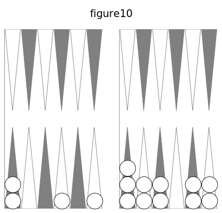
Soit la figure ci-jointe; les dames du talon ne peuvent servir à remplir au coup suivant ; on ne remplit que par 6-4, 6-3, 4-3. Si les deux dames du talon sont portées aux flèches quatrième et septième, on a les coups 6-5, 6-4, 6-3, 6-2, 5-4, 5-3, 5-2, 4-3, 4-2,3-2. On a la règle: Avec cinq cases faites, on remplit si les deux nombres du coup portent deux dames surnuméraires sur la flèche vide.
69. Deux demi-cases à faire.
Pour n'oublier aucun coup, il faut suivre la même marche qu'au n° 54. Avec cette figure, combinez les dames surnuméraires avec les demi-cases prises dans l'ordre naturel, c'est-à-dire couvrez la première demi-case avec la première dame surnu-maire, et la deuxième demi-case avec la deuxième dame surnuméraire; puis avec la troisième dame surnuméraire, avec la quatrième, avec la cinquième, ce qui donne les coups 5 - 5, 5-4, 5 - 3, 5-2.
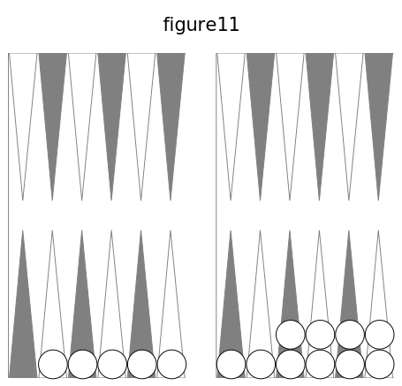
Couvrez ensuite la première demi-éase avec la deuxième dame surnuméraire, et la deuxième demi-case avec la troisième dame surnuméraire; puis avec la quatrième, avec la cinquième, ce qui donne les coups 4-4, 4-3, 4 2. On peut couvrir la première demi - case avec la troisième dame surnuméraire, et la deuxième demi case avec la quatrième dame surnuméraire, puis avec la cinquième : ce qui donne les coups 3-3, 3-2. Enfin couvrez la première demi-case avec la quatrième dame surnuméraire, et la deuxième demi-case avec la cinquième dame surnuméraire : cela donne 2-2. Ainsi l'ordre naturel donne les coups 5 -5, 5-4, 5-3, 5-2, 4-4, 4-3, 4-2, 3-3, 3-2, 2-2.
Pour l'ordre inverse, couvrez la deuxième demi-case avec la première dame surnuméraire, et la première demi-case avec la deuxième dame surnuméraire, puis avec la troisième, avec la quatrième, avec la cinquième : ce qui donne les coups 6-4, 6-3, 6-2, 6-1. Couvrez ensuite la deuxième demi-case avec la deuxième dame surnuméraire, et la première demi-case avec la troisième dame surnuméraire, puis avec la quatrième, avec la cinquième : cela donne 5-3, 5-2, 5-1. On peut couvrir la deuxième demi-case avec la troisième dame surnuméraire, et la première demi-case avec la quatrième dame surnuméraire, puis avec la cinquième : cela donne 4-2, 4-1. Enfin couvrez la deuxième demi-case avec la quatrième dame surnuméraire, et la première demi-case avec la cinquième dame surnuméraire, 3-1. Ainsi l'ordre inverse donne les coups, 6-4, 6-3, 6-2, 6-1, 5-3, 5-2, 5-1, 4-2, 4-1, 3-1. On peut remarquer que les deux-séries ont trois coups communs, 5-3, 5-2, 4-2.
70. Demi -cases non contiguës.
Dans la figure précédente, portez une dame de la première flèche à la cinquième, et une de la huitième à la septième; placez vos dames sur votre trictrac. L'ordre naturel donne 5-4, 4-4, 4-3, 4-3, 3-3, 3-2 ; l'ordre inverse donne 6-3, 6-2, 6-1, 5-2, 5-1, 4-1. La double dame surnuméraire de la cinquième flèche ajoute 3-1 ; 4-3 se trouve deux fois.
71. Essai pour remplir.
Comment voir si un coup couvre deux demi-cases? Prenons la figure du numéro précédent, et supposons que les deux séries de coups ne sont pas connues. Le coup 6-2 remplit-il? Essayez l'ordre naturel ; la première demi-case n'est couverte par aucune dame avec le nombre six. Essayez l'ordre inverse; la deuxième demi-case est couverte par le six de la première flèche, et la première demi-case l'est par le deux de la quatrième flèche ; donc 6-2 remplit.
72. Demi-case à faire.
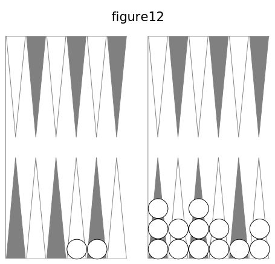
Vous remplissez si l'un des deux nombres ou leur somme est six, ou quatre, ou deux, ou bien si la somme des deux nombres est sept. Avec 3-2, on remplit du deux; 2-1 remplit du deux, le plus grand; 3-1 remplit par la somme.
73. Remplir de deux façons, de trois façons.
Vous remplissez de deux façons par 6.4, 6-1, 5-2, qui donnent à choisir entre deux dames qui peuvent couvrir la dixième flèche. Avec 4-2, vous remplissez du pelit nombre, du grand, de la somme : de trois façons.
74. Mettre dedans.
Relisez le n°59. Avec la figure 10 et le coup 5-4, vous jouez tout d'une du talon à la neuvième flèche; vous remplissez ensuite par tous les coups qui contiennent un six, un quatre, ou un trois, ou qui ont pour somme un de ces nombres; la somme neuf remplit aussi.
75. Conserver (cf. n°60).
Le grand jan se conserve bien plus longtemps que le petit jan. Avec la figure 4, vous pouvez conserver plusieurs fois, si les nombres ne sont pas grands. Comme on ne joue qu'une ou deux dames à chaque coup, il faut jouer avec la dame surnuméraire la plus voisine du coin, si on le peut.
76. Conserver par impuissance.
Ceci est une chose nouvelle. Si, avec la fig. 4, vous amenez deux fois 6-6, vous jouez le premier coup de la troisième flèche à la neuvième, et de la cinquième à la onzième. Quant au deuxième coup, si l'adversaire a son grand jan, vous ne pouvez jouer aucun 6, aucun nombre de ce coup ; cependant les cases de votre grand jan restent entières: donc vous conservez sans rien jouer. On appelle cela conserver par impuissance, par l'impuissance de rien jouer. Si le premier coup était 6-5, il laisserait un 6 pour jouer ; mais l'autre 6 du deuxième coup ne pourrait se jouer.
Ainsi, conserver par impuissance le grand jan, c'est ne pas rompre et avoir un ou deux nombres de son coup que l'on ne peut jouer. On ne conserve ainsi que quand on a passé toutes ses dames dans sa deuxième table, et qu'il vient des 6. On gagne autant que si l'on jouait les deux nombres; l'adversaire gagne quelque chose pour chaque nombre que vous ne pouvez jouer.
77. Conserver en passant au retour (cf. n°61).
Vous avez eu des coups très favorables, l'adversaire en a eu de très contraires, en sorte que les deux jeux sont ceux de la fig. 13. Vous pouvez placer des dames dans sa deuxième table, où il ne peut plus faire de plein (cf. n° 61, 2e alinéa). Si vous amenez 5-3, votre dame surnuméraire de la dixième flèche va à sa cinquième; avec 5-2, à sa sixième. Avec 5-4, votre dame surnuméraire de votre dixième flèche serait portée sur sa quatrième, où il a une dame et, où vous ne pouvez aller ; pour conserver, il faut jouer de votre dixième à sa huitième, et de votre septième à votre onzième.
78. Rompre (cf. a, 62).
Rompre, c'est ne pas conserver, c'est être forcé de jouer une ou deux des douze dames qui font les six cases du grand jan. Avec la fig. 13, vous rompez dès le premier coup, si vous amenez 4-4; vous jouez un 4 de votre septième flèche à votre coin, et vous ne pouvez jouer l'autre 4 que de votre flèche sixième ou septième; il vaut mieux de votre sixième, pour défendre le passage à l'adversaire le plus possible. Si vous amenez 6-6, vous êtes forcé de le jouer avec une des deux dames de votre neuvième flèche, qui se repose sur la huitième de l'adversaire et va à sa deuxième. Si l'adversaire n'avait de vide dans sa deuxième table que la sixième flèche, votre 6-6 vous forcerait à passer les deux dames de votre coin à cette sixième flèche, ce qui faciliterait bien le passage des dames de l'adversaire dans votre première table, en prenant votre coin vide pour repos, lorsque son coup contiendrait un 6, à moins que vous ne reprissiez votre coin.
On est obligé de rompre le plein, quand on amène un nombre qu'on ne peut jouer dans ses tables, s'il y a passage dans la deuxième de l'adversaire, pour aller dans sa première. On doit alors jouer la dame d'une de ses cases, qui va directement à ce passage en comptant le nombre de l'un des dés, et on la met dans sa première table à la flèche où elle va, en comptant les nombres des deux dés ensemble : bien entendu que cette flèche est vide, car si elle ne l'était pas, on ne romprait pas.
Lorsqu'on est obligé de rompre par 5-4, et que l'adversaire est également près de rompre, il est quelquefois plus avantageux de découvrir deux dames que de livrer passage; par ce moyen, s'il amène 6-5, il est obligé de rompre.
79. Refaire son plein (cf. n° 63).
Supposez que, dans la fig.13, vous portiez deux dames de la septième tlèche de l'adversaire à sa hùitième. Si vous amenez 6-2, vous êtes forcé de tout jouer (cf. n° 34), et il n'y a qu'une seule manière de le faire, c'est de jouer tout d'une de votre neuvième flèche à la sixième de l'adversaire, en vous reposant sur votre coin. Vous rompez ainsi votre plein; mais si, ensuite, vous amenez 1-1, vous remplissez de deux façons : la meilleure manière de jouer est de remplir de la dame surnuméraire de votre huitième flèche, et de porter celle qui est à la sixième de l'adversaire à sa cinquième. Dans ce moment, vos trois dames surnuméraires sont à votre septième flèche, à votre dixième et à la cinquième de l'adversaire. Si vous amenez 6-3, vous êtes forcé de rompre de nouveau en jouant de votre huitième flèche à la sixième de l'adversaire. Si, au coup suivant, vous amenez 4-1, vous remplissez avec la dame surnuméraire de la septième flèche, et vous jouez le 4 de la cinquième flèche de l'adversaire à sa première. Vous faites donc votre grand jan pour la troisième fois.
Vous voyez maintenant que je vous ai fait jouer 1 -1 en laissant la dame surnuméraire de votre septième flèche, pour qu'elle servît à remplir une troisième fois. Donc, quand vous êtes obligé de rompre et que vous pouvez le faire par plus d'un endroit, vous devez avoir l'attention de choisir celui qui donne le plus d'avantage pour l'elnplir de nouveau par la situation des dames qui restent. On doit prévoir l'obligation de rompre son grand jan, et se réserver au moins une dame en arrière de la flèche par laquelle on rompra, pour remplir de nouveau.
80. Reprendre son coin.
Si, avec les deux jeux de la fig. 13, l'adversaire amène 1 -1, il le joue de sa septième flèche à sa huitième. Si vous avez 6-6, vous ne pouvez le jouer qu'en passant votre coin. S'il vous vient ensuite un des coups It-3, 4-1, 3-1, vous reprenez votre coin et remplissez de nouveau.
81. Remplir en jouant un seul nombre.
Lorsque, des deux nombres amenés, l'un achève le plein et l'autre est impossible à jouer, on remplit néanmoins, et l'on gagne comme à l'ordinaire. Supposons que dans la ug. 13 l'adversaire ait son plein fait, que dans votre jeu une des dames de la. neuvième flèche soit portée à la sixième, les dames ainsi placées sur votre trictrac toujours ouvert (cf. n° 39), vous amenez 6-3, 6-2, 6-1 : vous ne pouvez jouer le 6, et vous remplissez du 3, du 2, de l'as.
82. Remplir en passant (cf. n° 64).
Remplir en passant se dit lorsque, n'ayant plus qu'une demi-case à faire pour achever le plein, un des deux nombres amenés remplit et l'autre fait rompre. On suppose que dans la figure 13 une dame de votre neuvième flèche est portée à la dixième ou à la onzième, et que vous amenez 4-2 : le 2 remplit et le 4 fait rompre.
83. Relever ses dames.
Si l'on a rompu, si l'on fait Je grands nombres qui portent les dames au delà du coin, et s'il n'y a point de passage dans le jeu de l'adversaire, on ne peut jouer, et l'adversaire gagne quelque chose pour chaque nombre qu'on ne joue pas. On peut même être forcé de relever toutes ses dames sur son coin ou sur ses dernières flèches. Si des deux nombres amenés on n'en peut jouer qu'un, on est forcé de jouer le plus grand, quand cela se peut.
84. Nombre à jouer. Nombre pour jouer.
Un nombre à jouer, que l'on est forcé de jouer avec une de ses dames (cf. n° 34), est l'un des deux nombres de dés au coup dont il est question. Il exprime combien il y a de points sur la face supérieure d'un dé, et n'est jamais plus grand que 6. Il indique de combien de flèches doit avancer une dame. Il n'y a jamais que deux nombres à jouer à chaque coup; si on les réunit, leur somme va de deux à douze.
Un nombre pour jouer, qui servira à jouer le coup de dés que l'on a amené ou que l'on amènera, exprime le plus grand nombre de flèches dont peut avancer une dame qui est à une place déterminée et connue. Il peut aller de zéro à dix dans chaque jeu. Si les deux grands jans sont faits, le nombre pour jouer d'une troisième dame sur le coin sera zéro; celui d'une dame au talon sera dix si le coin n'est pas pris, onze s'il est pris. Il peut y avoir un, deux, trois, quatre nombres pour jouer.
Les nombres pour jouer servent à battre le coin, avec les dames entrées dans votre deuxième table ; ils servent aussi pour remplir, pour conserver et pour autre chose. Pour battre le coin, il faut que, dans les nombres pour jouer, il s'en trouve deux égaux aux deux nombres à jouer. Au numéro 45, ayant des dames aux flèches sixième et huitième, cela vous donne pour aller au coin de l'adversaire les nombres 6, 4, qui se trouvent être les nombres amenés par les dés. Au numéro 47, la figure 4 donne, pour conserver, les nombres 8, 6, 5 ; le coup 5 - 4 donne les nombres à jouer 5, 4.
85. Revirade.
Faire une revirade, c'est défaire une case pour en faire une autre, ou pour couvrir une demi-case. Supposons que vous ayez une dame à votre cinquième flèche, deux à votre sixième, et une à votre septième, et que l'adversaire ait fait les cases des flèches première, quatrième et dixième : si$si vous amenez 5-1,vous abattez le cinq et vous jouez l'as de la sixième flèche à la septième, parce que cela vous fait là case du diable (cf. n° 66).
Vous avez votre plein, moins le coin que vous n'avez pu prendre ; vous avez une surcase à votre sixième flèche, et les autres dames surnuméraires sont dans votre première table: vous amenez 5-5, ou 5-4, 5-3, 5-2, 5-1 ; vous ne devez pas manquer de faire la revirade pour prendre votre coin.
86. Double revirade.
Elle consiste à défaire deux cases pour en faire une plus avancée; elle est rare, et n'a guère lieu qu'avec les cases des flèches sixième et septième, lorsque ayant ses cinq dames surnuméraires sur plusieurs flèches de sa première table, et sa dixième flèche vide, on a l'espoir de remplir au premier coup ou au deuxième.
Il est une autre espèce de double revirade, qui consiste à pousser une case à une flèche vide plus éloignée. C'est presque toujours une faute que font les joueurs inexpérimentés, croyant avancer ainsi leur jeu. Mais ils le retardent, en resserrent l'étendue, et s'exposent par conséquent à l'influence funeste des grands nombres plusieurs fois répétés.
87. Pousser plusieurs cases.
Lorsque plusieurs cases se touchent et qu'on fait un doublet qui transporte la première de ces cases après la dernière, en sorte qu'elles se touchent encore, au lieu d'enlever avec la main les deux dames de cette première case pour les porter après les autres, on peut pousser toutes les cases à la fois l'espace d'une flèche.
88. Enfilade.
Si les coups vous sont très favorables, et s'ils sont très contraires à l'adversaire, il est possible qu'il soit obligé de rompre tout de suite, d'ouvrir son jeu et de vous laisser libre de passer au retour. Vous en profitez bientôt en conservant et passant vos dames surnuméraires dans sa deuxième table ou sa première. Il ne peut alors passer chez vous; il sera peut-être réduit à porter toutes ses dames dans son coin. C'est ce qu'on appelle être enfilé, subir l'enfilade. Il arrive quelquefois qu'un joueur est enfilé, sans que ce soit sa faute, quand les coups lui sont totalement contraires, et qu'il ne peut plus faire son plein : ce fâcheux événement est l'effet du hasard, mais les joueurs prudents l'évitent presque toujours.
IV. Retour — passer au retour — jan de retour - sortir ses dames des flèches
4.1 Retour - passer au retour - jan de retour
89. Importance et difficulté du retour.
Ce que j'ai à vous dire sur ces trois parties est d'une grande importance; cela sera fort long, et exigera de l'attention et de la patience, parce qu'il y a beaucoup de cas particuliers qui peuvent se présenter dans le grand nombre de parties que l'on joue. Les détails sur le retour s'oublient plus facilement que ceux du jeu ordinaire (voyez n° 33 ), parce qu'ils arrivent moins souvent, qu'ils sont plus nombreux et plus difficiles. Pour qu'il n'y ait jamais de contestation, il faut en apprendre bien les lois, voir comment on lève les dames.
90. Retour.
Le retour est pour vous la moitié du tablier qui est du côté de l'adversaire (cf. n° 33). Quand vous avez rompu votre grand jan, et que vous ne pouvez plus le refaire, (cf. n° 79), vous vous occupez de passer au retour. Vous passez vos dames dans la deuxième table de l'adversaire, puis dans la première. Mais, pour passer, il faut trouver des passages ouverts, c'est-à-dire que la flèche sur laquelle vous vous reposez et celle où vous arrêtez n'aient aucune dame de l'adversaire (cf. n"' 42, 61). Avec la fig. 13, 6-5 fait passer de la dixième flèche à la deuxième de l'adversaire ; pour 5-4, on joue le cinq de la dixième flèche à la huitième de l'adversaire, et de la septième au coin. Dans ce, cas, le passage est ouvert ; dans le cas contraire, le passage est fermé.
91. Demi-cases d'abord.
Toutes les cases sont égales pour la première table de l'adversaire ; ainsi on peut y faire chacune à deux fois. Lorsque l'adversaire n'y a plus de dames, vous devez y étendre les vôtres, en commençant par y faire des demi-cases, et d'abord les plus éloignées du talon de l'adversaire, afin d'avoir ensuite de plus grands nombres pour jouer, et parce que vous caserez et remplirez plus facilement.
92. Cases éloignées du talon.
Pour la raison que je viens de donner, on doit, quand on le peut, commencer par faire les cases les plus éloignées du talon de l'adversaire. Quand on commence par les dernières, on s'expose à ne pas remplir, à cause des dames qui se trouvent passées avant qu'on ait pu remplir.
93. Ouvrir ou fermer le passage.
Si votre adversaire est fort avancé, s'il a rompu son grand jan, fermez les passages et ne relevez qu'une dame à vos flèches sixième et septième. S'il a plus de dames passées dans votre première table que vous dans la sienne, tâchez de lui interdire longtemps le passage, pour le forcer à perdre des dames dans votre première table.
Si, au contraire, vous êtes plus avancé que lui, relevez et passez promptement, sans vous occuper de lui fermer un passage : vous perdriez un temps précieux que vous devez employer à bâter le plein. Si l'adversaire a son grand jan et deux ou trois dames surnuméraires sur son coin et que vous ayez le même plein, jouez les coups 4-4, 4-3, 4-2, 4-1, 3-3, 3-2, 3-1, 2-2, 2-1, 1-1, en levant les deux dames de la septième flèche, pour forcer l'adversaire à rompre, s'il amène un six, car il ne pourra alors conserver par impuissance.
94. Trois dernières cases.
Quand le jeu de l'adversaire est bien avancé pour passer au retour, il faut tâcher de conserver le coin et les cases des flèches dixième et neuvième, pour gêner le passage et nuire au jeu de l'adversaire.
95. Dames à la neuvième flèche.
Si l'adversaire a un jeu très long, il ne faut pas lui tenir les passages fermés aux flèches septième et huitième; il faut relever, autant que les coups le permettent, et empiler sur la neuvième flèche, parce que, s'il vient des deux, on peut les jouer sans rompre les trois cases qui sont la dernière ressource.
96. Sortir du coin.
Quand on est près de remplir, et surtout quand on n'a plus que deux ou trois cases dans sa deuxième table, on doit sortir du coin. Sans celte attention, on sera obligé de passer des dames au delà des flèches à couvrir, si l'on amène un ou deux as, et l'on manquera le jan de retour. On agit autrement si l'on a encore plusieurs cases à faire, et si l'adversaire a bien des cases dans sa deuxième table, parce que le coin serait battu presque à tous les coups. Lorsque l'on ne peut plus conserver les trois dernières cases, et qu'il faut en sortir une, on doit préférer sortir le coin, parce qu'il est toujours, même étant vide, un obstacle au passage de celui de l'adversaire, puisqu'il lui oppose les coups où il y a un as. Quand on se dispose à passer son coin, il faut éviter d'y mettre des surcases, qui en empêcheraient la sortie.
97. Jan de retour.
Vous avez vu que le grand jan, semblable au petit jan, en diffère en dix articles. Le troisième plein donne lieu à bien plus de choses nouvelles ; on vient d'en donner huit, et on en fera connaître beaucoup d'autres.
98. Pouvoir remplir.
Pour pouvoir remplir au coup suivant, il faut les quatre mêmes conditions qu'au * n° 67; et en outre, s'il reste une demi-case à faire, il faut qu'une dame surnuméraire ne soit pas à plus de douze flèches de la dame à couvrir, puisque la plus forte somme des nombres est douze.
99. Une case à faire (cf. n˚53, 68).
Pour avoir tous les coups qui remplissent, il faut combiner deux à deux les dames surnuméraires :on a 5-4, 5-3, 5-2, 5-1, 4-3, 4-2, 4-1, 3-2, 3-1, 2-1. Si cette série n'est pas écrite, on peut voir si un coup remplit. Soit, par exemple, 4-3 : on voit qu'à compter quatre à partir de la flèche vide, on arrive à la sixième, qui a une dame ; de même trois tombe sur la cinquième flèche; donc 4-3 remplit.
100. Deux demi-cases à faire (cf. n° 54, 69).

Pour n'oublier aucun coup, combinez les dames surnuméraires avec les deux demi-cases prises dans Tordre naturel, c'est-à-dire couvrez la première demi-case avec la première dame surnuméraire, et la deuxième demi - case avec la deuxième dame surnuméraire, puis avec la troisième dame surnuméraire, avec la quatrième, avec la cinquième : ce qui donne les coups 5-5, 5-4, 5-3, 5-2. Couvrez ensuite la première demi-case avec la deuxième dame surnuméraire, et la deuxième demi-case avec la troisième dame surnuméraire, puis avec la quatrième, avec la cinquième : ce qui donne les coups 4-4, 4-3, 4-2. On peut couvrir la première demi-case avec la troisième dame surnuméraire, et la deuxième demi-case avec la quatrième da- • me surnuméraire, puis avec la cinquième: ce qui donne les coups 3-3, 3-2. Enfin couvrez la première demi-case avec la quatrième dame surnuméraire, et la deuxième demi-case avec la cinquième dame surnuméraire: cela donne 2-2. Ainsi l'ordre naturel donne les coups 5-5, 5-4, 5-3, 5-2, 4-4, 4-3, 4-2, 3-3, 3-2, 2-2.
Pour l'ordre inverse, couvrez la deuxième demi-case avec la première dame surnuméraire, et la première demi-case avec la deuxième dame surnuméraire, puis avec la troisième, avec la quatrième, avec la cinquième : ce qui donne les coups 6-4, 6-3, 6-2, 6-1. Couvrez ensuite la deuxième demi-case avec la deuxième dame surnulllérajre, et la première demi-case avec la troisième dame surnuméraire, puis avec la quatrième, avec la cinquième : cela donne 5-3, 5-2, 5-1. On peut couvrir la deuxième demi - case avec la troisième dame surnuméraire, et la première demi-case avec la quatrième dame surnuméraire, puis avec la cinquième : cela donne 4-2, 4-1. Enfin couvrez la deuxième demi-case avec la quatrième dame surnuméraire, et la première demi-case avec la cinquième dame surnuméraire, 3-1. Ainsi l'ordre inverse donne les coups, 6-4, 6-3, 6-2, 6-1, 5-3, 5-2, 5-1, 4-2, 4-1, 3-1. On peut remarquer que les deux séries ont trois coups communs, 5-3, 5-2, 4-2.
101. Demi-cases non contiguës.
Portez une dame du talon à la première flèche dans la figure 15. L'ordre naturel donne 6-5, 5-5, 5-4, 5-3, 5-4, 4-4, 4-3, 4-3, 3-3; l'ordre inverse, 6-3, 6-2, 6-1, 5-2, 5-1, 4-1. Les coups 5-4, 4-3, se trouvent deux fois.
102. Essai pour remplir (cf. n° 71).
Les deux séries étant supposées inconnues, essayez 6-2 ; dans l'ordre naturel, aucun six ne couvre la première demi-case; dans l'ordre inverse, six couvre la deuxième demi-case, et deux couvre la première avec la dame surnuméraire de la quatrième flèche.
103. Demi-case à faire.
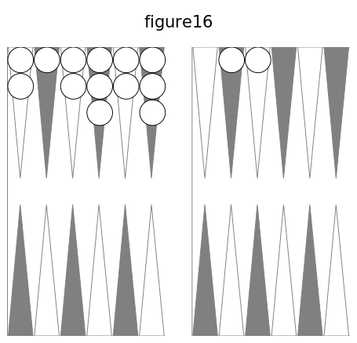
Vous remplissez si l'un des deux llombres ou leur somme est six, ou quatre, ou deux, ou bien si la somme desdeux nombres est sept. Avec 3-2, on remplit du deux; 2-1 remplit du deux, le plus grand; 3-1 remplit par la somme.
104. Remplir de deux façons, de trois façons (cf. n° 73).
Vous remplissez de deux façons par 6-4, 6-1, 5-2, qui donnent à choisir entre deux dames qui peuvent couvrir la première flèche. Avec 4-2, vous remplissez du petit nombre, du grand, de la somme, de trois façons.
Si les deux dames des flèches septième et huitième sont portées au coin, elles ne peuvent servir à remplir au coup suivant, car les deux dames ne peuvent sortir séparement.
105. Mettre dedans (cf. n° 74).
Relisez le numéro 59. Avec la fig. 14 et le coup 6-3, vous mettez le trois sur la deuxième flèche, et le six va de la sixième flèche au talon ; vous remplissez ensuite par tous les coups qui ont un cinq, un deux ou un as.
106. Conserver (cf. noa 60, 75).
Avec la fig. 5, vous pouvez conserver plusieurs fois, si les nombres ne sont pas grands. Comme on ne joue qu'une ou deux dames à chaque coup, il faut jouer avec la dame surnuméraire la plus voisine du talon, si on le peut.
107. Conserver par impuissance (cf. n° 76).
On conserve ainsi dans quatre cas. Si l'on a une dame surnuméraire à la cinquième flèche de l'adversaire, une case à sa huitième flèche, l'adversaire en ayant une à sa neuvième, et si l'on amène G-6, on ne peut jouer de sa huitième flèche, à cause des dames qu'a l'adversaire à sa neuvième ; dans la première table de l'adversaire, on ne peut jouer que le cinq. Si vous portez votre case à votre coin, 6-1 ne vous permet de jouer que l'as, même si l'adversaire n'a plus de dames dans son jeu. On a son coin et la troisième dame surnuméraire à la quatrième flèche, l'adversaire a une damè à sa neuvième flèche; on amène 6-3, on ne peut passer les dames de son coin à cause de la dame de l'adversaire ; on joue le trois de la quatrième flèche à la première. Le quatrième cas est semblable au premier : l'adversaire a des cases à ses flèches neuvième et dixième; vous ne pouvez jouer ni 6-6, ni 6-5 ; vous jouez le cinq de la cinquième flèche de l'adversaire.
108. Privilége de la bande.
Une loi fort singulière est celle-ci : Lorsque toutes les dames sont entrées dans la première table de l'adversaire, on compte pour une flèche la bande AD, fig. 1, contiguë aux deux talons. Cette loi a des applications très importantes.
109. Remplir par ce privilège.
On a son jan de retour moins une dame à la deuxième flèche ; les dames surnuméraires sont au talon et aux flèches première, quatrième et sixième ; on amène 5-4 ; on remplit avec le quatre; puis, tout étant entré, on joue sur la bande le cinq de la quatrième flèche.
110. Conserver par le privilége de la bande.
La bande étant comptée pour une flèche, si l'on a son jan de retour, les trois dames surnuméraires étant placées, une au talon et deux à la cinquième flèche de l'adversaire, si l'on amène 6-6 ou 6-1, on conserve en jouant sur la bande les deux dames de la cinquième flèche, ou une de la cinquième flèche et une du talon. Si vous n'avez plus qu'une dame dans la deuxième table de l'adversaire, et si vous amenez un nombre par lequel vous pouvez entrer cette dame, vous avez le droit, après l'avoir entrée, de jouer l'autre nombre sur la bande pour conserver; on a 6-6, et les trois dames surnuméraires aux flèches première, cinquième, sixième; on joue le premier 6 de la sixième flèche au talon, puis le deuxième 6 de la cinquième à la bande.
Au jan de retour, il manque une dame à la première flèche ; deux dames surnuméraires sont à la cinquième flèche, les deux autres aux flèches troisième, sixième; on amène 6-5 ; on joue le cinq pour remplir, puis le six de la cinquième flèche.
111. Rompre (cf. n°62, 78).
Avec le jeu de la fig. 5, vous romprez au deuxième coup, si vous avez deux sonnez ou deux 6-5.
112. Refaire son jan de retour (cf. n° 63, 79).
Votre trictrac ouvert, vous faites le jan de retour, et placez vos trois dames surnuméraires sur votre coin; deux dames de l'adversaire sont à sa dixième flèche.
Vous avez 1-1, vous rompez de la cinquième flèche, 5-2 vous fait remplir une deuxième fois. Vous rompez par 3-1, de la cinquième flèche ; 4-3 fait passer le coin, et 2-1 fait remplir une troisième fois.
113. Remplir en jouant un seul nombre (cf. n°81).
Vous avez votre jan de retour moins une dame à la deuxième flèche, votre coin, une dame surnuméraire au talon, l'autre à la troisième flèche. Vous amenez 6-1, vous remplissez de ras, et ne jouez point le six.
114. Remplir en passant (cf. n°64, 82).
Vous avez votre plein moins une dame à votre quatrième flèche ; vos dames surnuméraires sont : deux au talon, les autres aux flèches première et septième. Vous amenez 6-3, vous remplissez du trois et vous rompez du six.
4.2 Sortir ses dames des flèches
115. Loi de la sortie. Toutes les dames dans la première table.
Pour jouir de la faculté de mettre ses dames hors des flèches, il faut qu'elles soient toutes entrées dans la première table de l'adversaire. Il n'est pas nécessaire qu'elles y soient toutes quand on jette les dés; si la dernière entre par un nombre, avec l'autre nombre on peut sortir une dame. On peut sortir les dames qui aboutissent à la bande par les nombres amenés.
Les dames qui vont sur la bande ou hors des flèches sont mises en une ou deux piles dans votre deuxième table près le milieu de la bande B C.
116. Noms des nombres.
Pour mieux entendre les autres lois de la sortie, il faut employer pour les nombres amenés trois dénominations : nombres sortants, nombres défaillants, nombres excédants. Il peut s'en trouver de deux espèces. Les premiers sont ceux dont le nombre aboutit à la bande par l'une des dames qui peut sortir. Les seconds sont ceux dont le nombre est trop petit pour aboutir à la bande par aucune dame ; on joue la plus éloignée du talon. Les derniers sont trop grands pour aboutir à la bande ; ils vont au delà et sortent les dames.
117. Une dame pour une autre.
Celui qui, ayant à jouer un nombre sortant, se trompe, et touche une dame qui, par ce nombre, peut être jouée dans le tablier, fait faute et est obligé de jouer la dame touchée (cf. n° 46), et non celle par laquelle il aurait pu sortir.
118. Avantages du premier sortant.
Celui qui parvient à sortir le premier toutes ses dames gagne quelque chose pour le dernier coup; il marque ce gain avant de toucher ses dames. Il a la primauté pour le relevé, et joue ainsi deux coups de suite. Il oblige l'adversaire à lever aussi ses dames, quand même il aurait encore son plein et la certitude de conserver bien des fois. Les deux joueurs gardent le gain qu'ils ont fait.
On verra plus loin que le gain pour la sortie est plus grand si le dernier coup est un doublet. Il est d'usage que celui qui joue le dernier coup, devant jouer le premier quand on recommencera, dise en jetant les dés : Je joue pour tout, afin que l'on connaisse son gain pour la sortie et le coup qu'il aura à jouer.
119. Sortie de convention.
Il arrive presque toujours que la position des jeux ne laisse aucune incertitude sur la priorité de la sortie; on convient ordinairement, pour supprimer un grand nombre de coups inutiles, que celui à qui cette priorité est acquise incontestablement recommencera tout de, suite.
120. Changement de dames.
Quand, un joueur ayant tout sorti, on recommence à jouer, il est d'usage que chaque joueur garde les dames qu'il a de son côté, et on change ainsi à chaque relevé.
121. Réflexions sur ce qu'on a vu.
Avant d'aller plus loin, il est bien utile de réfléchir sur ce qui précède, de voir ce qu'il y a de semblable et de différent dans les trois pleins. Il est facile de remarquer, dans les trois cas, la similitude pour remplir quand il manque une case, deux demi-cases, une demi-case d'une façon, de deux ou trois façons, ainsi que pour conserver et pour rompre. Il n'y a de difficile que quand il manque deux demi-cases à un plein, et cette difficulté disparaît en étudiant bien cela. Vous ne devez voir quelque chose de nouveau que quand vous savez parfaitement ce que vous avez appris, afin que vous n'ayez jamais deux choses à étudier à la fois. Jusqu'à présent, j'ai suivi l'ordre le plus naturel; je continuerai la même marche.
V. Jans
122. Jans
On a vu (cf. n° 47, 2eme alinéa) qu'on nomme jan tout coup qui apporte un gain à l'un des joueurs ; néanmoins, on donne spécialement le nom de jan aux trois pleins que l'on fait dans ses deux tables et dans la première table de l'adversaire. Il y a cinq autres jans moins importants et plus rares, mais qu'il est nécessaire de connaître, car ils apportent un bénéfice. Je vais les expliquer.
123. Jan de trois coups. Jan de six dames.
Il se fait lorsqu'en trois coups, en commençant la partie, on abat six dames de suite, cinq dans la première table et une dans la deuxième. On n'est point obligé de jouer le troisième coup avec deux autres dames; il suffit qu'il ait deux nombres convenables pour abattre les deux autres dames. Avec deux des quatre dames abattues, on fait la case la plus avantageuse dans la deuxième table, après avoir marqué son gain. Si, après avoir eu 6-1, 3-2, on a 5-4, on fait case à la septième flèche., Le jan de trois coups ne doit être cherché que quand on a de petits nombres; dans le cas contraire, il vaut mieux jouer le deuxième coup dans sa deuxième table, pour arriver à prendre son coin. Si l'on a les coups 3-2, 5-4, on joue deux dames aux flèches sixième et huitième.
124. Jan de deux dames. Jan de deux coins. Battre les deux coins.
C'est lorsqu'on n'a que deux dames abattues, l'adversaire n'ayant pas son coin, et que les nombres portent une des dames à son coin et l'autre au coin de l'adversaire. On abat deux autres dames ; chaque joueur peut le faire une fois.
125. Contre-jan de deux dames. Contre-jan des deux coins. Battre les deux coins à faux.
C'est quand on n'a que deux dames abattues, l'adversaire ayant son coin, si les deux nombres portent les deux dames dans les deux coins. Le gain est alors pour l'adversaire.
126. Jan de mézéas. Les as du coin.
C'est lorsque ayant pris son coin sans avoir d'autre dame abattue, l'adversaire n'ayant pas le sien, on amène un ou deux as. Un seul joueur peut le faire, une seule fois.
127. Contre-jan de mézéas.
Il est très rare. C'est lorsque ayant son coin sans autre dame abattue, l'adversaire ayant le sien, on amène un ou deux as. Le gain est pour l'adversaire.
128. Ce qui va suivre.
On sait ce que c'est que battre le coin (cf. n° 45) ; on va apprendre à battre les dames. L'expérience vous fera voir qu'après le grand jan et le jan de retour, c'est la chose la plus importante.
VI. Battre a vrai — Battre a faux
129. Battre une dame.
Si une dame de l'adversaire est seule sur une flèche à lui ou à vous, et si votre coup porte une de vos dames sur cette dame découverte, soit par un des deux nombres, soit par leur somme, on dit que vous la battez, et cela vous donne un gain. Si, avec la figure 17, vous amenez 4-1, une dame de votre dixième flèche peut aller à la neuvième, de l'adversaire, où il a une dame seule, et par conséquent elle est battue du nombre quatre. Avec 5-1, vous battez de la somme six à partir de votre huitième flèche. Une dame seule sur une seule flèche est une demi-case quand on veut remplir, une dame découverte quand on veut battre.
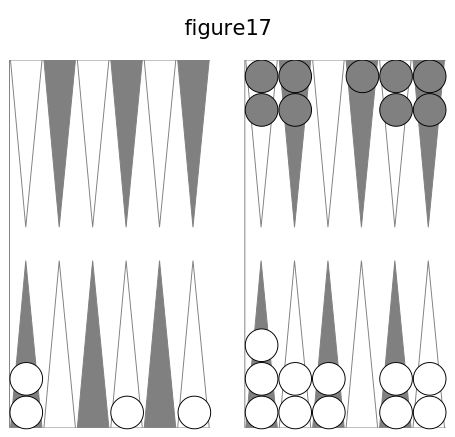
130. Dame qui bat. Battre du coin.
La marche pour battre est la même que pour jouer. Une dame qui bat ne change pas de place; il en résulte qu'une des deux dames du coin peut battre. Cela est différent pour remplir (cf. n° 104, 2e alinéa), et l'on voit pourquoi.
131. Battre de une, deux, trois façons.
Dans la fig. 17, 4-1 bat d'une façon ; 3-1 bat de deux façons, du trois, du trois et un, des flèches onzième et dizième; 4-3 bat de trois façons, du trois, du quatre, du quatre et trois, des flèches onzième, dixième et septième. Quand on bat de deux façons, de trois façons, le gain est double, triple. On voit déjà la grande similitude entre battre et remplir, quand il manque une dame au plein.
132. Battre plusieurs dames.
D'un seul coup, on peut battre plusieurs dames. Soit la figure 18 : si l'adversaire amène 6-3, il vous bat les quatre dames des flèches troisième, quatrième, sixième, septième; deux sont battues d'une façon, deux le sont de deux façons.
133. Voir si l'on bat.
S'il y a plusieurs dames découvertes, il faut faire l'examen pour chacune de ces dames, comme on vient de le faire.
134. Dames passées au retour.
Une dame passée dans la deuxième table ou la première peut battre ou être battue : si, avec la figure 13,vous avez amené 6-2, vous avez été forcé de jouer de votre septième flèche à la huitième de l'adversaire, pour ne pas rompre; si ensuite vous avez 6-4, vous battez de deux façons, de votre neuvième flèche et de la huitième de l'adversaire. Avec 3-1, il vous bat de deux façons.
135. Repos. Passage.
On a vu que, pour passer au retour, (cf. 61, 77, 93), il faut se reposer sur une flèche où l'adversaire n'a aucune dame; celte flèche sert de passage pour aller s'arrêter sur une flèche où il n'y a pas de dame de l'adversaire.
Pour battre, c'est bien différent : il peut y avoir une dame de l'adversaire sur la flèche où l'on se repose, et une sur celle où porte la somme des deux nombres; les deux dames sont battues.
136. Battre à vrai. Battre à faux.
Une dame de l'adversaire sur une flèche empêche de s'y reposer pour passer au retour; on a fait, pour battre, une convention analogue. Si la somme des nombres d'un coup porte une de vos dames sur une dame de l'adversaire, vous la battez ; si le repos a plus d'une dame, le passage est fermé, le coup est contre vous, le gain est est pour l'adversaire, vous battez à faux. Quand le repos n'a pas deux dames, vous battez à vrai ; quand le repos a plus d'une dame, vous battez à faux.
137. Un passage ouvert.
Quand le coup est simple, il y a deux passages; il suffit que l'un soit ouvert. Ainsi, toutes les fois que les dés sont jetés • par vous ou l'adversaire, il faut bien examiner s'il y a un passage ouvert, s'il y a un gain pour vous ou pour lui.
138. Battre à vrai et à faux.
On peut du même coup battre à vrai des dames et en battre d'autres à faux. Si, avec les deux jeux de la figure 18 (page 14 5), l'adversaire amène 6-6, il bat à vrai les dames des flèches première, sixième, septième ; il bat à faux les dames des flèches troisième, quatrième, cinquième.
Les dames des flèches sixième et septième sont battues à vrai. On peut établir cette règle : _On bat toujours à vrai si l'on hat par l'un des deux nombres__.
139. Ce qu'on va voir.
Vous avez un gain pour tous les coups suivants : battre le coin, faire un des trois pleins, conserver, sortir le premier ses dames des flèches, battre à vrai une dame, faire le jan de trois coups, le jan de deux dames, le jan de mézéas. Vous donnez un gain à l'adversaire pour chaque nombre que vous ne jouez pas, pour le battre à faux, pour les deux contre-jans.
Je vais vous faire connaitre comment on nomme ce que l'on gagne, et comment on le marque. Ensuite je dirai la valeur de ces différents gains.